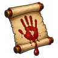

Blood Pact D
D-rank. Sign a contract in blood with one clan of fabled animals: Gale Hawks, Iron Boars, Moon Wolves or Stone Tortoises. A ninja can hold only one contract. Needed for Kuchiyose: Fabled Animal.
| Rank | Chakra | Cooldown | Class level |
|---|---|---|---|
| D | 10 | 10 s | 1 |